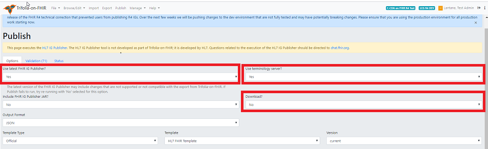

Publishing
An implementation guide (IG) is a set of rules on how FHIR resources are used to solve a particular problem, with associated documentation to support and clarify the usage. The FHIR Implementation Guide Publisher generates an IG for online publication.
The HL7 IG Publisher tool is developed by HL7 and is not part of Trifolia-on-FHIR (ToF). Questions related to the execution of the HL7 IG Publisher should be directed to chat.fhir.org.
The main screen of the FHIR IG Publisher export displays the description of the Implementation Guide. The main page of the IG publisher executes the HL7 IG Publisher.
- The Options tab allows users to specify options you would like to use for the export.
- The Validation tab lists any validation issues returned by the FHIR server's $validate operation. These validation issues may vary depending on the implementation of the FHIR server.
- The Status tab allows users to monitor the status of the publication process (the FHIR IG Publisher)
To publish your IG, follow these steps:
1. From the top navigation menu, click Publish.
2. Select the options for your publication.

a. In the Use latest FHIR IG Publisher field, select Yes.
Note: HL7 requires the latest IG publisher for ballots. The IG publisher updates occasionally include bugs, resulting in errors. You can select No pending resolution of the bugs.
b. In the Use terminology server field,
- Select No if the IG does not require connection to the terminology server. This speeds up up the publishing process.
- Select Yes if the IG needs to connect to the terminology server to check terminology bindings.
c. In the Download? field, select Yes to download the entire published package to your computer when complete.
3. Click Publish.
Note: This process can be time-consuming, depending on the size of your IG. Once published, click the link on the status screen to view the IG or Select Browse/Edit then select View Implementation Guide.